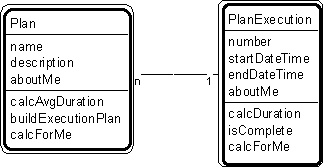

Pattern #21. "Plan - Plan Execution" Pattern // plan patterns

Typical object interactions
- calcAvgDuration --> calcDuration
- buildExecutionPlan --> create
Examples
- battle plan - battle execution, recipe - recipe execution, job - job execution, procedure - procedure execution.
Combinations
Pattern #20. "Plan-Step"
Pattern #23. "Plan Execution - Step Execution"
Pattern #24. "Plan - Plan Version."
Notes
- This is an actual execution of a plan at a date and time. Use this pattern when a plan may be executed several times. (If the plan is executed only once, the responsibilities for plan execution could be added to a plan.)